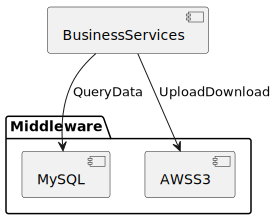
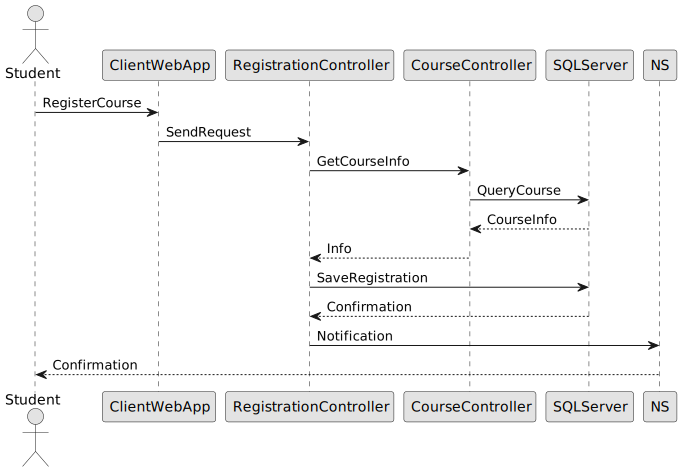
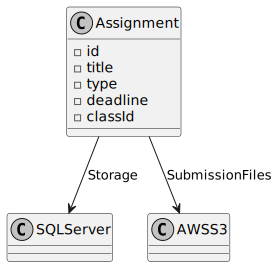
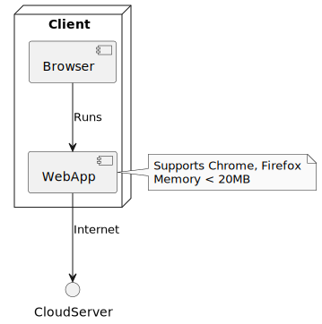

Giới thiệu
Tài liệu này cung cấp cái nhìn tổng quan về kiến trúc của Hệ thống học tiếng Anh trực tuyến và Hệ thống Quản lý Học tập (LMS) do ABC-ENGLISH phát triển. Hệ thống hỗ trợ học tiếng Anh trực tuyến, quản lý khóa học, lớp học, bài tập, và cấp chứng chỉ cho học viên. Tài liệu sử dụng các góc nhìn kiến trúc khác nhau (Use Case View, Logical View, Process View, Deployment View) để mô tả các quyết định kiến trúc quan trọng.
Mục tiêu và Ràng buộc Kiến trúc (Architectural Goals and Constraints)
Các yêu cầu chính và ràng buộc hệ thống có ảnh hưởng đáng kể đến kiến trúc bao gồm:
- Tích hợp với hệ thống bên ngoài: Hệ thống phải tích hợp với các dịch vụ cloud (AWS S3) để lưu trữ tài liệu và các công cụ họp trực tuyến (Zoom, Google Meet) để hỗ trợ học trực tuyến.
- Hỗ trợ đa nền tảng: Chức năng của học viên, giáo viên và quản trị viên phải có thể truy cập từ PC cục bộ và thiết bị từ xa qua kết nối Internet, sử dụng trình duyệt web hiện đại.
- Bảo mật: Hệ thống sử dụng JSON Web Token (JWT) để xác thực và mã hóa mật khẩu bằng BCrypt để đảm bảo bảo mật dữ liệu người dùng. Tất cả truy cập từ xa đều yêu cầu xác thực qua email và mật khẩu.
- Kiến trúc Client-Server: Hệ thống được triển khai dưới dạng kiến trúc client-server, với client chạy trên trình duyệt web và server chạy trên máy chủ đám mây (Docker), đảm bảo khả năng mở rộng.
- Khả năng mở rộng: Hệ thống phải dễ dàng mở rộng để thêm các loại nội dung học tập mới (ví dụ: bài kiểm tra tương tác, video 360 độ) với tác động tối thiểu đến hệ thống hiện tại.
- Hiệu suất: Hệ thống phải đáp ứng các yêu cầu về hiệu suất và tải, bao gồm hỗ trợ 1000 người dùng đồng thời và độ trễ truy cập cơ sở dữ liệu dưới 10 giây.
- Giao diện người dùng: Hệ thống cung cấp giao diện đồ họa thân thiện, tuân thủ tiêu chuẩn UX/UI hiện đại, hỗ trợ đa ngôn ngữ (tiếng Anh, tiếng Việt).
Biểu đồ Mục tiêu Kiến trúc
Chức năng chính của hệ thống
| Danh mục | Chức năng | Mô tả chi tiết |
|---|---|---|
| Quản lý hệ thống | Quản lý hệ thống | Quản lý cấu hình hệ thống, bao gồm bảo mật (JWT), hiệu suất (hỗ trợ 1000 người dùng đồng thời), và triển khai (Docker). |
| Quản lý người dùng | Quản lý tài khoản học viên, giáo viên, quản trị viên: đăng ký, phân quyền (role-based), cập nhật thông tin, xóa tài khoản. | |
| Quản lý khóa học | Tạo khóa học mới, chỉnh sửa thông tin (tên, mô tả, thời lượng), xóa khóa học, và gán giáo viên phụ trách. | |
| Quản lý tài liệu | Upload tài liệu học tập (PDF, video), lưu trữ trên cloud, phân phối tài liệu cho học viên theo khóa học. | |
| Quản lý lớp học | Tổ chức lớp học theo khóa học, gán học viên và giáo viên, quản lý lịch học và trạng thái lớp. | |
| Quản lý buổi học | Lên lịch buổi học, theo dõi tiến độ (đã hoàn thành, đang diễn ra), ghi nhận điểm danh và nhận xét. | |
| Quản lý bài tập | Tạo bài tập (trắc nghiệm, tự luận), chấm điểm tự động hoặc thủ công, lưu trữ kết quả bài tập. | |
| Quản lý kết quả học tập | Lưu trữ kết quả học tập (điểm bài tập, bài kiểm tra), hiển thị báo cáo tiến độ cho học viên và giáo viên. | |
| Quản lý nhận xét | Giáo viên nhận xét học viên sau mỗi buổi học hoặc bài tập, học viên có thể phản hồi nhận xét. | |
| Quản lý trang Feed | Hiển thị thông báo hệ thống, cập nhật khóa học, thông tin lớp học, và các sự kiện quan trọng. | |
| Quản lý chứng chỉ | Cấp chứng chỉ (PDF) khi học viên hoàn thành khóa học, hỗ trợ tải xuống và gửi qua email. | |
| Chức năng của học viên | Đăng ký | Tạo tài khoản mới với thông tin cá nhân (email, mật khẩu, tên, số điện thoại). |
| Đăng nhập | Truy cập hệ thống bằng email và mật khẩu, sử dụng JWT để xác thực. | |
| Kiểm tra đầu vào | Thực hiện bài kiểm tra đầu vào (trắc nghiệm), nhận kết quả và gợi ý lộ trình học phù hợp (A1, A2, B1, v.v.). | |
| Xem thông tin khóa học | Xem chi tiết khóa học: mô tả, thời lượng, giáo viên, lịch học, và tài liệu liên quan. | |
| Xem thông tin lớp học | Xem lịch học, danh sách học viên, giáo viên, và trạng thái lớp (đang diễn ra, đã kết thúc). | |
| Xem tài liệu | Tải xuống hoặc xem trực tuyến tài liệu học tập (PDF, video) được cung cấp trong khóa học. | |
| Thực hiện bài tập | Làm bài tập trắc nghiệm hoặc tự luận, nộp bài trực tuyến trong thời hạn quy định. | |
| Xem kết quả | Xem điểm số bài tập, bài kiểm tra, và nhận xét từ giáo viên. | |
| Theo dõi tiến độ | Xem tiến độ học tập: số buổi học đã hoàn thành, điểm số trung bình, và lộ trình học tập. | |
| Chức năng của giáo viên | Thao tác tài liệu | Upload, chỉnh sửa, xóa tài liệu học tập, gán tài liệu cho từng lớp học hoặc buổi học. |
| Thao tác bài tập | Tạo bài tập, đặt thời hạn nộp bài, chấm điểm tự động hoặc thủ công, gửi phản hồi cho học viên. | |
| Thao tác buổi học | Điểm danh học viên, ghi nhận nhận xét sau mỗi buổi học, cập nhật trạng thái buổi học. |
Góc nhìn logic (Logical View)
Phần này mô tả góc nhìn logic của kiến trúc, bao gồm các lớp quan trọng, tổ chức trong các gói dịch vụ và phân hệ, và cách các phân hệ được phân tầng.
5.1 Tổng quan kiến trúc – Phân tầng gói và phân hệ
Góc nhìn logic của hệ thống học tiếng Anh trực tuyến bao gồm 3 gói chính: Giao diện người dùng (User Interface), Dịch vụ nghiệp vụ (Business Services), và Đối tượng nghiệp vụ (Business Objects).
- Gói Giao diện người dùng: Chứa các lớp biên (boundary classes) cho các biểu mẫu mà học viên, giáo viên, và quản trị viên sử dụng, hỗ trợ đăng nhập, quản lý khóa học, bài tập, buổi học, và chứng chỉ.
- Gói Dịch vụ nghiệp vụ: Chứa các lớp điều khiển (control classes) để quản lý xác thực người dùng, đăng ký khóa học, quản lý bài tập, và cấp chứng chỉ.
- Gói Đối tượng nghiệp vụ: Bao gồm các lớp thực thể (entity classes) như Course, Class, Assignment, Certificate, và các lớp biên để giao tiếp với AWS S3 và công cụ họp trực tuyến.
Biểu đồ phân tầng gói và phân hệ
5.1.1 Tầng ứng dụng (Application Layer)
Tầng ứng dụng chứa các lớp biên đại diện cho giao diện người dùng trên trình duyệt web, phụ thuộc vào tầng Dịch vụ nghiệp vụ.
Biểu đồ tầng ứng dụng
5.1.2 Tầng dịch vụ nghiệp vụ (Business Services Layer)
Tầng dịch vụ nghiệp vụ chứa các lớp điều khiển để quản lý luồng nghiệp vụ, chẳng hạn như xác thực, đăng ký khóa học, và quản lý bài tập.
Biểu đồ tầng dịch vụ nghiệp vụ
5.1.3 Tầng trung gian (Middleware Layer)
Tầng trung gian hỗ trợ truy cập cơ sở dữ liệu quan hệ (MySQL) và lưu trữ cloud (AWS S3).
Biểu đồ tầng trung gian
5.1.4 Tầng tái sử dụng cơ bản (Base Reuse Layer)
Tầng tái sử dụng cơ bản chứa các lớp hỗ trợ chức năng danh sách và các mẫu thiết kế (patterns).
Biểu đồ tầng tái sử dụng cơ bản
Luồng xử lý (Process View)
Phần này mô tả các tiến trình chính, cách chúng tương tác, và ánh xạ đến các chức năng của hệ thống, đảm bảo hỗ trợ 1000 người dùng đồng thời.
6.1 Các tiến trình
-
6.1.1 Tiến trình xác thực người dùng (UserAuthenticationProcess)
Quản lý xác thực người dùng bằng JSON Web Token (JWT).
Phương thức:
-đăng nhập(): Xác thực email/mật khẩu, trả về JWT token (24 giờ).
-đăng ký(): Tạo tài khoản, mã hóa mật khẩu bằng BCrypt, gửi email xác nhận.
Tương tác: Cung cấp token cho các tiến trình khác. Tích hợp với hệ thống phân quyền.
Hiệu suất: Xử lý 500 yêu cầu/giây.
Biểu đồ tiến trình xác thực người dùng
-
6.1.2 Tiến trình quản lý khóa học (CourseManagementProcess)
Quản lý vòng đời khóa học.
Phương thức:
-tạo khóa học(): Tạo khóa học, lưu vào cơ sở dữ liệu, thông báo qua Feed.
-cập nhật khóa học(): Cập nhật thông tin, kiểm tra xung đột lịch học.
-xóa khóa học(): Xóa khóa học, lưu lịch sử.
Tương tác: Cung cấp dữ liệu cho StudentRegistrationProcess.
Bảo mật: Chỉ quản trị viên/giáo viên được phép thao tác.
Biểu đồ tiến trình quản lý khóa học
-
6.1.3 Tiến trình đăng ký của học viên (StudentRegistrationProcess)
Xử lý đăng ký khóa học và bài kiểm tra đầu vào.
Phương thức:
-đăng ký khóa học(): Đăng ký học viên, gửi xác nhận.
-làm bài kiểm tra đầu vào(): Tạo bài kiểm tra, gợi ý lộ trình học theo CEFR.
-lấy thông tin học viên(): Truy xuất thông tin học viên.
Tương tác: Kết nối với AssignmentManagementProcess, NotificationSystem.
Mở rộng: Hỗ trợ tích hợp thanh toán.
Biểu đồ tiến trình đăng ký của học viên
 -
6.1.4 Tiến trình quản lý bài tập (AssignmentManagementProcess)
Quản lý tạo, nộp, chấm điểm bài tập.
Phương thức:
-tạo bài tập(): Tạo bài tập, đặt thời hạn.
-nộp bài tập(): Lưu bài nộp trên AWS S3, thông báo giáo viên.
-chấm bài tập(): Chấm điểm, gửi phản hồi.
Tương tác: Đồng bộ với SessionManagementProcess, NotificationSystem.
Hiệu suất: Chấm 1000 bài trắc nghiệm trong 5 phút.
Biểu đồ tiến trình quản lý bài tập
-
6.1.5 Tiến trình quản lý buổi học (SessionManagementProcess)
Quản lý lịch học, điểm danh, nhận xét.
Phương thức:
-tạo buổi học(): Lên lịch, thông báo học viên.
-điểm danh(): Ghi nhận trạng thái điểm danh.
-thêm nhận xét(): Ghi nhận nhận xét.
Tương tác: Kết nối với CertificateIssuingProcess, NotificationSystem.
Bảo mật: Chỉ giáo viên được phép thao tác.
Biểu đồ tiến trình quản lý buổi học
-
6.1.6 Tiến trình cấp chứng chỉ (CertificateIssuingProcess)
Quản lý cấp chứng chỉ.
Phương thức:
-tạo chứng chỉ(): Tạo chứng chỉ PDF, gửi qua email.
-kiểm tra điều kiện(): Kiểm tra điều kiện cấp chứng chỉ.
Tương tác: Kết nối với SessionManagementProcess, NotificationSystem.
Hiệu suất: Tạo 500 chứng chỉ trong 10 phút.
Biểu đồ tiến trình cấp chứng chỉ
Biểu đồ tổng quan các tiến trình
6.2 Ánh xạ tiến trình đến các thành phần thiết kế
-
6.2.1 UserAuthentication
Lớp điều khiển xác thực người dùng, sử dụng JWT và BCrypt.
Biểu đồ ánh xạ UserAuthentication
-
6.2.2 Course
Lớp thực thể đại diện cho khóa học, lưu trữ trên MySQL.
Biểu đồ ánh xạ Course
-
6.2.3 Assignment
Lớp thực thể đại diện cho bài tập, lưu trữ trên MySQL và AWS S3.
Biểu đồ ánh xạ Assignment
 -
6.2.4 Session
Lớp thực thể đại diện cho buổi học, lưu trữ lịch học và điểm danh.
Biểu đồ ánh xạ Session
-
6.2.5 Certificate
Lớp thực thể đại diện cho chứng chỉ, lưu trữ trên AWS S3.
Biểu đồ ánh xạ Certificate
Biểu đồ ánh xạ tiến trình đến thiết kế

6.3 Phụ thuộc giữa mô hình tiến trình và mô hình thiết kế
Mô hình tiến trình phụ thuộc vào các lớp thực thể và điều khiển trong mô hình thiết kế, được thể hiện qua các mối quan hệ trong cơ sở dữ liệu và API.
Biểu đồ phụ thuộc mô hình
6.4 Ánh xạ tiến trình đến triển khai
Các tiến trình được ánh xạ đến các thành phần triển khai như container Docker và trình duyệt web.
Biểu đồ ánh xạ triển khai

Size and Performance
Kiến trúc phần mềm được thiết kế để đáp ứng các yêu cầu về kích thước và hiệu suất:
- Số lượng người dùng đồng thời: Hỗ trợ 1000 người dùng đồng thời trên cơ sở dữ liệu trung tâm, 500 người dùng trên máy chủ cục bộ.
- Độ trễ truy cập: Truy cập cơ sở dữ liệu (MySQL) với độ trễ dưới 10 giây.
- Hiệu suất giao dịch: Hoàn thành 80% giao dịch (đăng ký, làm bài tập, nhận điểm) trong 2 phút.
- Yêu cầu tài nguyên client: Ứng dụng web yêu cầu dưới 20 MB bộ nhớ trình duyệt và không cần cài đặt phần mềm bổ sung.
- Kiến trúc Client-Server: Client chạy trên trình duyệt, server triển khai trên Docker, tối ưu hóa tài nguyên.
Biểu đồ hiệu suất hệ thống
Quality
Kiến trúc phần mềm hỗ trợ các yêu cầu chất lượng:
- Giao diện người dùng: Tuân thủ UX/UI hiện đại, tương thích với trình duyệt Chrome, Firefox, Safari, hỗ trợ đa ngôn ngữ.
- Hỗ trợ trực tuyến: Cung cấp trợ giúp trực tuyến với hướng dẫn chi tiết và định nghĩa thuật ngữ.
- Khả năng hoạt động liên tục: Hoạt động 24/7, thời gian ngừng hoạt động tối đa 4%.
- Thời gian giữa các sự cố (MTBF): Vượt quá 300 giờ.
- Cập nhật: Bản cập nhật client được tải trực tiếp qua trình duyệt, không cần cài đặt thủ công.
Biểu đồ chất lượng hệ thống
Góc nhìn triển khai (Deployment View)
Phần này mô tả kiến trúc triển khai, bao gồm các node vật lý và ánh xạ tiến trình.
7.1 Thiết bị client (Client Device)
Chạy ứng dụng web trên trình duyệt cho học viên, giáo viên, quản trị viên.
Biểu đồ thiết bị client
7.2 Máy chủ đám mây (Cloud Server)
Máy chủ đám mây chạy container Docker, lưu trữ dữ liệu trên MySQL và AWS S3.
Biểu đồ máy chủ đám mây
7.3 Internet
Kết nối giữa Client Device và Cloud Server, đảm bảo truy cập từ xa.